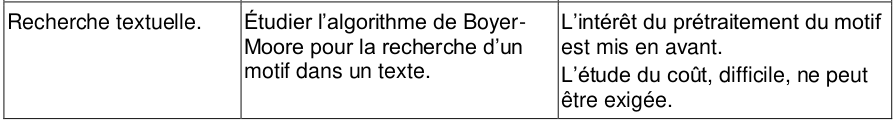

Recherche textuelle⚓︎

1. Recherche naïve⚓︎
Illustration de l'algorithme
Vous pouvez contrôler le déroulement de l'animation en la survolant avec la souris.
1.1 Premier algorithme⚓︎
Algorithme de recherche naïve 
1 2 3 4 5 6 7 8 9 10 11 12 13 14 15 16 | |
Exemple d'utilisation :
>>> recherche_naive("une magnifique maison bleue", "maison")
[15]
>>> recherche_naive("une magnifique maison bleue", "nsi")
[]
>>> recherche_naive("une magnifique maison bleue", "ma")
[4, 15]
1.2 Modification de l'algorithme⚓︎
Exercice 1
Re-écrire l'algorithme précédent en s'arrêtant dès qu'une occurrence de motif est trouvée dans texte.
La fonction renverra uniquement un booléen.
Correction
1 2 3 4 5 6 7 8 9 10 11 12 13 14 15 16 | |
1.3 Application à la recherche d'un motif dans un roman⚓︎
Le Projet Gutenberg permet de télécharger légalement des ouvrages libres de droits dans différents formats.
Nous allons travailler avec le Tome 1 du roman Les Misérables de Victor Hugo, à télécharger ici  au format
au format txt.
1.3.1 Récupération du texte dans une seule chaîne de caractères⚓︎
1 2 | |
1.3.2 Vérification et mesure du temps de recherche⚓︎
Exercice 2
À l'aide du module time, mesurer le temps de recherche dans Les Misérables d'un mot court, d'une longue phrase (présente dans le texte), d'un mot qui n'existe pas. Que remarquez-vous ?
Correction
import time
with open('Les_Miserables.txt') as f:
roman = f.read().replace('\n', ' ')
def recherche_naive(texte, motif):
'''
renvoie la liste des indices (éventuellement vide) des occurrences de
de la chaîne `motif` dans la chaîne `texte`.
'''
indices = []
i = 0
while i <= len(texte) - len(motif):
k = 0
while k < len(motif) and texte[i+k] == motif[k]:
k += 1
if k == len(motif):
indices.append(i)
i += 1
return indices
t0 = time.time()
motif = 'maison'
print(recherche_naive(roman, motif))
print(time.time()-t0)
t0 = time.time()
motif = 'La chandelle était sur la cheminée et ne donnait que peu de clarté.'
print(recherche_naive(roman, motif))
print(time.time()-t0)
t0 = time.time()
motif = 'parcoursup'
print(recherche_naive(roman, motif))
print(time.time()-t0)
On remarque que le temps de recherche est semblable, quel que soit le motif cherché.
2. Vers l'algorithme de Boyer-Moore : et si on partait à l'envers ?⚓︎
Illustration de l'algorithme en partant à l'envers
Vous pouvez contrôler le déroulement de l'animation en la survolant avec la souris.
Exercice 3
Re-écrire l'algorithme de recherche naïve mais en démarrant de la fin du motif et non du début.
Certes, c'est pour l'instant très artificiel, mais :
Correction
1 2 3 4 5 6 7 8 9 10 11 12 | |
3. Algorithme de Boyer-Moore-Horspool⚓︎
2.1 Principe⚓︎
L'idée est d'améliorer le code précédent (celui on parcourt le motif à l'envers) en sautant directement au prochain endroit potentiellement valide.
Pour cela on regarde le caractère X du texte sur lequel on s'est arrêté (car X n'était pas égal au caractère de rang équivalent dans le motif):
- si
Xn'est pas dans le motif, il est inutile de se déplacer "de 1" : on retomberait tout de suite surX, c'est du temps perdu. On se décale donc juste assez pour dépasserX. - si
Xest dans le motif, on va regarder la place de la dernière occurence deXdans le motif et de déplacer de ce nombre, afin de faire coïncider leXdu motif et leXdu texte.
Illustration de l'algorithme
Vous pouvez contrôler le déroulement de l'animation en la survolant avec la souris.
2.2 Implémentation⚓︎
2.2.1 Fonction préparatoire⚓︎
On va d'abord coder une fonction dico_lettres qui prend en paramètre un mot mot et qui renvoie un dictionnaire associant à chaque lettre de mot son dernier rang dans mot. On exclut la dernière lettre, qui poserait un problème lors du décalage (on décalerait de 0...)
Exercice 4
Écrire la fonction dico_lettres.
Exemple d'utilisation :
>>> dico_lettres("MAURIAC")
{'M': 0, 'A': 5, 'U': 2, 'R': 3, 'I': 4}
Correction
1 2 3 4 5 | |
2.2.2 Boyer-Moore-Horspool⚓︎
Algorithme de Boyer-Moore-Horspool
1 2 3 4 5 6 7 8 9 10 11 12 13 14 15 16 17 18 19 20 21 22 23 24 | |
- On remonte le motif à l'envers, tant qu'il y a correspondance et qu'on n'est pas arrivés au début du motif
- Si on est arrivés à la valeur
k=-1, c'est qu'on a parcouru tout le mot : on l'a donc trouvé. - On a trouvé le motif, mais attention, il ne faut pas trop se décaler sinon on pourrait rater d'autres occurences du motif (pensez à la recherche du motif «mama» dans le mot «mamamamama»). On se décale donc de 1.
- On s'est arrêté avant la fin, sur une lettre présente dans le mot : il va falloir faire un décalage intelligent.
- On décale juste de ce qu'il faut pour mettre en correspondance les lettres, en faisant attention à ne pas décaler d'un nombre négatif. Au pire, on décale de 1.
- La lettre n'est pas dans le motif : on se positionne juste après elle.
Exemple d'utilisation :
>>> BMH("une magnifique maison bleue", "maison")
[15]
>>> BMH("une magnifique maison bleue", "nsi")
[]
>>> BMH("une magnifique maison bleue", "ma")
[4, 15]
Exercice 5
Reprendre les mesures effectuées sur Les Misérables, mais cette fois avec l'algorithme BMH. Que remarquez-vous ?
Correction
import time
with open('Les_Miserables.txt') as f:
roman = f.read().replace('\n', ' ')
def dico_lettres(mot):
d = {}
for i in range(len(mot)-1):
d[mot[i]] = i
return d
def BMH(texte, motif):
dico = dico_lettres(motif)
indices = []
i = 0
while i <= len(texte) - len(motif):
k = len(motif)-1
while k >= 0 and texte[i+k] == motif[k]:
k -= 1
if k == -1:
indices.append(i)
i += 1
else:
if texte[i+k] in dico: #(4)
i += max(k - dico[texte[i+k]], 1)
else:
i += k+1
return indices
t0 = time.time()
motif = 'maison'
print(BMH(roman, motif))
print(time.time()-t0)
t0 = time.time()
motif = 'La chandelle était sur la cheminée et ne donnait que peu de clarté.'
print(BMH(roman, motif))
print(time.time()-t0)
t0 = time.time()
motif = 'parcoursup'
print(BMH(roman, motif))
print(time.time()-t0)
retour console :
[7264, 9090, 9547, 9745, 10936, 17820, 23978, 38192, 41639, 41651, 41840, 42493, 48028, 48393, 51448, 53353, 70867, 72692, 72768, 75608, 77855, 108489, 115739, 130629, 132983, 138870, 143681, 144600, 153114, 155973, 158709, 160700, 163649, 169164, 169181, 171761, 171967, 182642, 186413, 190534, 219378, 220314, 224518, 225098, 227579, 296302, 345108, 345893, 346740, 349677, 359727, 362025, 389945, 395690, 434118, 438068, 457795, 457886, 464696, 469403, 501768, 514980, 520667, 520878, 520926, 520968, 522707, 529329, 598128, 601390, 645915]
0.06359553337097168
[651731]
0.01853322982788086
[]
0.037064313888549805
On constate quelque chose de remarquable (et qui peut être à première vue contre-intuitif) :
Plus le motif recherché est long, plus la recherche est rapide.